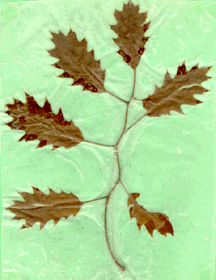

Student Project
Eric

My tree is in a park close to where I live. It is an oak tree. It is very large. The trunk is ten feet nine inches around. The tree span is 72.5 feet across. Most of one side has been broken off by a storm. It looks like it's about 100 years old. I feel very small next to it. I also feel very safe and relaxed.
-Eric
c. Eric
Grade 4
Thomas Jefferson Magnet School
Euclid, Ohio USA
"My Tree"
Crayons, Pencil and Paint on Paper 9"X12"
Oak
Latin Name: TBA
Age: 100 years old
Circumference at 54 inches from the base: 10 feet, 9 inches
Location: Euclid, Ohio USA
 Return to Main Page
Return to Main Page
June Julian jj68@nyu.edu